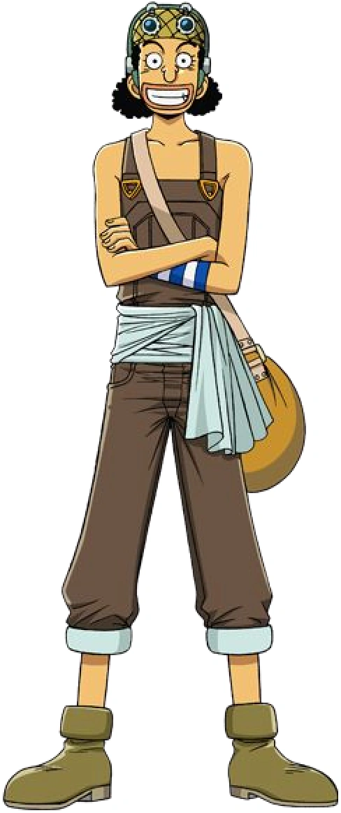

Quem é Usopp
Usopp é filho de Yasopp, um dos Piratas do Ruivo, que partiu para o mar deixando sua esposa e filho para trás. Com isso, Usopp começa a mentir para a vila Syrup, dizendo que piratas estão se aproximando, e também para sua mãe, que estava muito doente, já que ele acreditava que isso fortaleceria seu espírito.
Com a morte da sua mãe, ele continuou alertando todos da vila da chegada de Piratas. Muitos do vilarejo algumas vezes perseguiam ou arremessavam coisas nele, outros usavam os gritos de Usopp como uma forma de alarme, já que era algo que ele fazia todos os dias. Além disso, o garoto inventava histórias para entreter Kaya, uma garota que estava doente e precisava passar a maior parte do tempo em repouso na sua cama.
Luffy, Zoro e Nami chegam na ilha Syrup em busca de um barco para poder adentrar a Grand Line e Usopp, ao ver piratas de verdade, fica muito feliz e tenta enganar o grupo afirmando ser líder de uma grande frota de Piratas. Luffy não acredita, mas os dois acabam se tornando amigos depois que ele descobre que Usopp é filho de um dos integrantes dos Piratas do Ruivo.
O confronto na ilha começa quando Usopp escuta uma conversa de um pirata chamado Jango e seu capitão Kuro, que estava na ilha há três anos disfarçado de mordomo de Kaya, planejamento um assassinato para roubar todo o dinheiro da garota. Kuro permite que o garoto fuja já que ninguém acreditaria nele, devido a seu histórico de ser mentiroso.
Os Chapéus de Palha decidem ajudar o garoto e começam a criar um plano para atacar os piratas Gato Preto. O grupo planeja errado e Nami e Usopp precisam lutar sozinho contra Jango, enquanto Luffy está perdido e Zoro cai na armadilha feita pela pirata.
Eventualmente, o grupo consegue derrotar Jango e Kuro e decidem não contar para as outras pessoas da vila sobre o ataque. Usopp decide partir em sua jornada como pirata e é convidado por Luffy a se juntar aos Chapéus de Palha, e eles recebem um barco de Kaya, chamado de Going Merry.
Como é a aparencia dele?

Usopp era um adolescente magro com altura média e cabelo lanoso preto e um longo nariz, que é, aparentemente, uma alusão ao Pinocchio (um menino de madeira a partir de uma história de mesmo nome que possuía um nariz que crescia quando ele mentia). Usopp herdou seu famoso nariz de sua mãe, enquanto o resto do seu rosto se assemelha ao seu pai. Durante a separação dos Chapéus de palha, após o desembarque no Arquipélago Boin, Usopp ficou obeso por comer demais.
Ele geralmente usava uma bandana verde oliva, uma braçadeira listrada azul e branco em seu braço esquerdo, junto com óculos especiais de sniper (ele também tem um par de óculos retangulares claro que ele às vezes usa em situações em que ele não tem os seus óculos de sniper, como quando conheceu os Chapéus de Palha ou quando os seus óculos de franco-atiradores foram roubados por Mr. 2), macacão marrom com uma faixa branca e sem camisa por baixo (embora ele usava uma camisa verde durante o Arco Skypiea). Ele também carrega com ele uma sacola amarela, que ele armazena todas as suas ferramentas e dispositivos.
Após dois anos de time skip, Usopp aumentou a hipertrofia muscular e seu cabelo cresceu. Ele cresceu dois centímetros.
Usopp agora tem um novo par de óculos de proteção ao redor de seu pescoço (as suas cangalhas de atirador não foram apresentados) e tem alguns fones de ouvido ou protetores auriculares também. Ele também tem agora um cavanhaque com um chapéu branco. Ele também tem um novo par de calças amarelas enroladas com suspensórios vermelhos, e uma parelha de botas.
Personalidade dele
Conhecido por ser um mentiroso compulsivo, Usopp também é retratado como covarde, assustado e ansioso. Tais traços são utilizados tanto de forma séria quanto para efeitos cômicos. Ele se surpreende com os feitos de força de seus companheiros e por muito tempo nutriu sentimentos autodepreciativos, tendo crescido com medo e incerteza da vida. Suas mentiras são um meio de lidar com a pressão mas por conta delas ele também se desenvolveu como um grande contador de histórias. Apesar de tudo, Usopp consegue deixar o medo de lado em situações de desespero, especialmente se seus amigos dependerem disso. Quando Usopp gosta de alguém, ele sequer permite que falem mal dessa pessoa. Ele admira muito seu pai Yasopp mesmo tendo sido abandonado e respeita muito a cultura guerreira dos gigantes, eventualmente desejando poder visitar seu lar Elbaf.
Usopp tinha muito amor pelo primeiro navio de sua tripulação, o Going Merry, já que os dois começaram a jornada juntos e o Merry foi um presente de sua amiga Kaya. Sempre que o navio era danificado, ele o consertava como podia. Entretanto, isso também era uma forma de lidar com suas inseguranças. Ele temia ser abandonado por seus companheiros da mesma forma que eles resolveram obter outro navio quando o Merry foi considerado além de reparos. Tudo isso resulta na criação de uma outra identidade chamada Sogeking, o Rei dos Atiradores, um suposto herói de uma ilha distante, tão grandioso que possui até música tema. Usando a máscara de Sogeking, Usopp consegue enganar a si mesmo para reunir coragem e forças até finalmente perceber que seu papel na tripulação é maior do que ele mesmo pensava. Após um salto de dois anos na história, Usopp retorna mais confiante e racional, porém ainda assustado perante oponentes e situações absurdas.
Além de atirador, Usopp cumpre várias outras funções no bando. Ele servia de carpinteiro e engenheiro até a entrada de Franky, é bom para projetar armas e também possui dons artísticos para escultura e pintura. Uma piada dentro da obra é que as mentiras de Usopp em algum momento se tornam realidade. Ele já inventou histórias fantasiosas que acabaram se realizando, como a existência de um peixe capaz de engolir embarcações, um país de anões, e muitas situações em que ele se vangloriou falsamente vieram a acontecer no futuro, como a vez em que ele afirmou já ter caçado um cérbero e depois encontrou um de verdade.
Todas as recompensas de Usopp
- 500,000,000 Berries
- 200,000,000 Berries
- 30,000,000 Berries
Primeira recompensa
Na sequência dos acontecimentos de Enies Lobby, uma recompensa de $30.000.000 foi colocada sobre a cabeça de Usopp por ter queimado a bandeira do Governo Mundial sobre a Torra da Justiça e atacado o líder da CP9 Spandam.
Segunda recompensa
Ao ajudar na derrota dos Piratas Donquixote, sua recompensa subiu para $200.000.000 por seu papel em libertar os escravos de Brinquedos.
Terceira recompensa
É a atual recompensa e conseguiu ajudando em onigashima na batalha e ajudar a libertar Wano e por Luffy ser um imperador conseguiu a recompensa $500.000.000
Habilidades do Usopp
Usopp é o integrante mais fraco em termos de força física do grupo, por isso está sempre fugindo. Para compensar, ele tem uma das melhores miras, sendo comparado com seu pai, Yasopp, e tendo a capacidade de acertar alvos em uma distância gigantesca.
Para atirar, o pirata utiliza seu estilingue chamado de Kuro Kabuto, que permite que ele arremesse bombas, pedras e suas Pop Green, sementes de plantas que ele aprendeu a usar e cultivar enquanto estava em Greenstone. Elas tem diversas funcionalidades como invocar uma planta gigante que emite um cheiro terrível, soltar vários bambus que empalam os adversário ou até mesmo uma onda de choque que paralisa todos que estão próximos.
Por ser um atirador que não tem quase nenhuma força, Usopp sabe analisar muito bem o campo de batalha, sabendo qual o momento certo de atacar, de fugir e até qual alvo lhe dá a maior chance de sobrevivência. Além disso, o pirata tem o Haki da Observação, permitindo que ele veja a aura de aliados e inimigos, auxiliando na análise e também na hora de mirar em algum alvo.
Fora de combate, Usopp tem uma facilidade em mentir, o que em alguns momentos já foi útil para o personagem. Ele é capaz de criar algumas armas com seu conhecimento em engenharia, como o Clima-Tact de Nami que, além de criá-lo, melhorou o objeto com o passar dos anos. E por fim, ele adquiriu um grande conhecimento em plantas e jardinagem, já que precisa cultivar seus Pop Green para o combate.